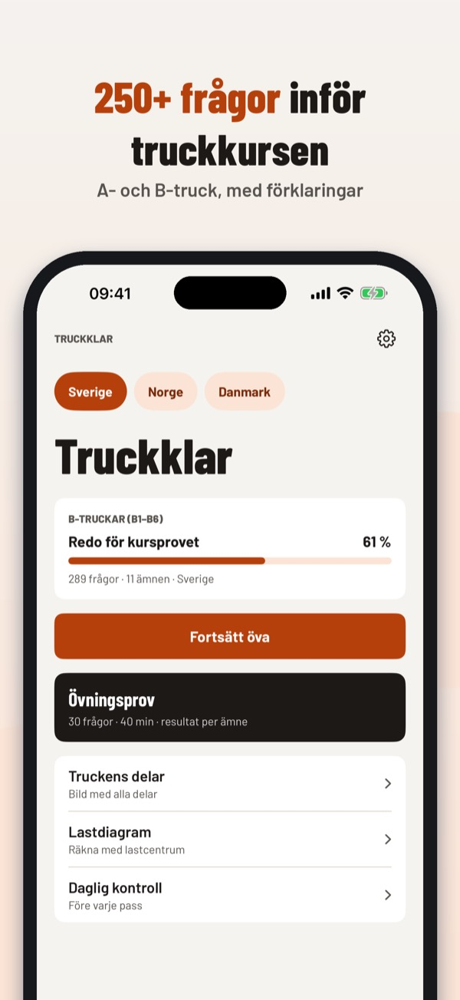
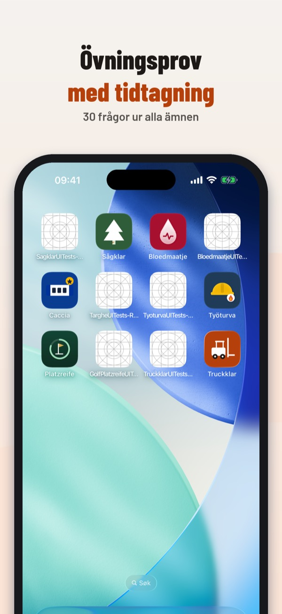
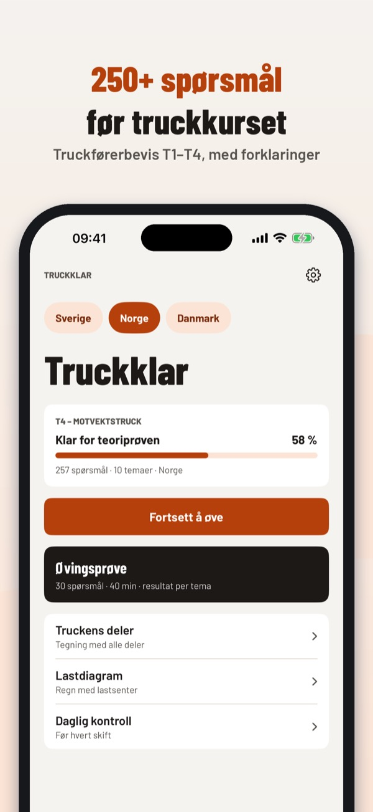
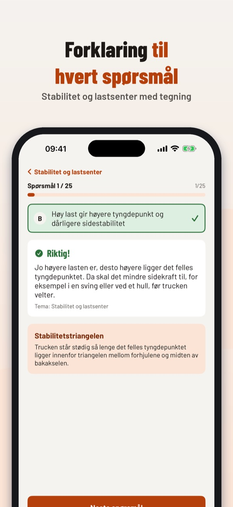
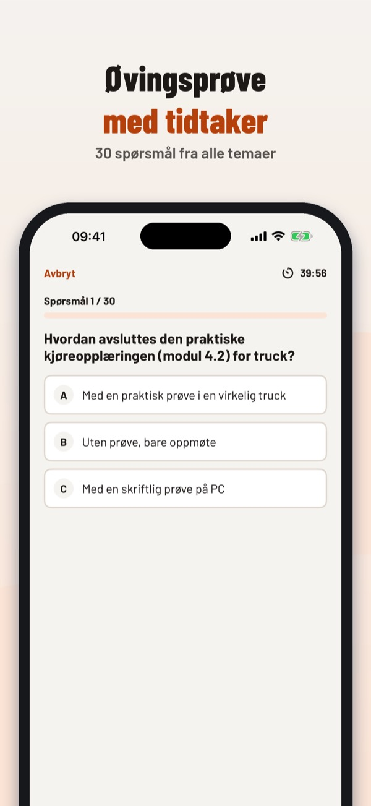
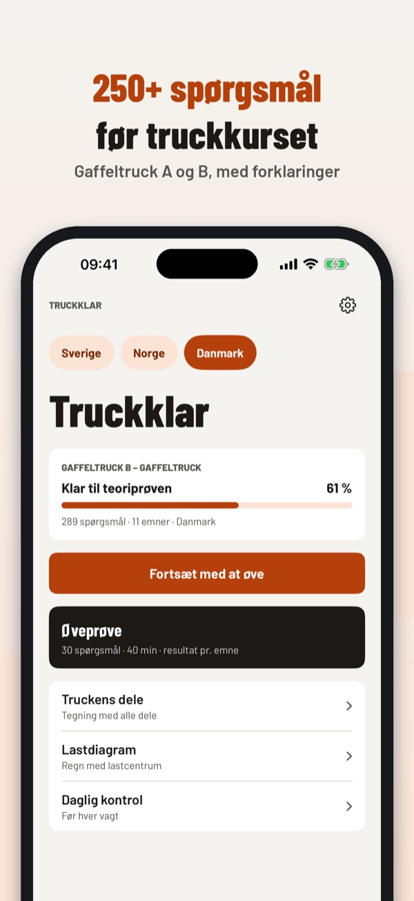
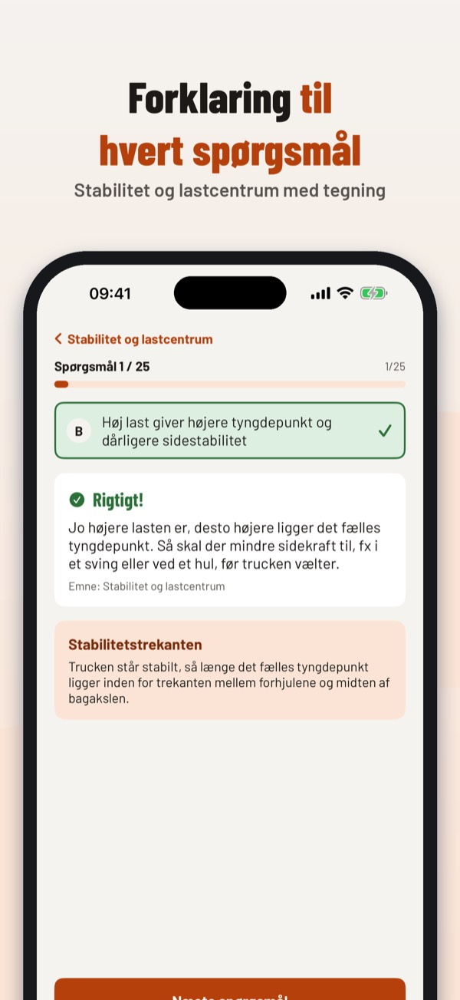
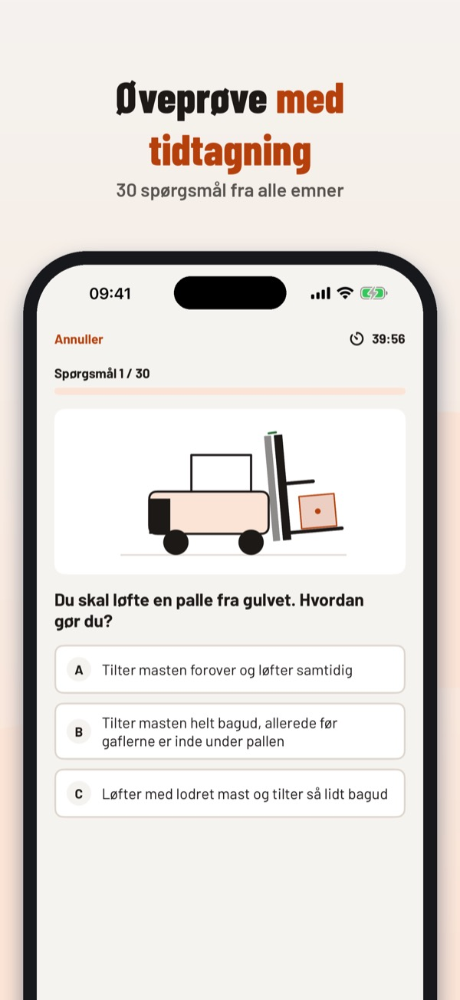

Övningsfrågor A- och B-truck
Plugga truckteorin inför kursen: frågor med förklaringar och bilder, övningsprov, lastdiagram förklarat och en checklista för daglig kontroll.


Truckklar hjälper dig att plugga truckteorin inför truckkursen – på svenska, norska eller danska.
• Välj land och kategori: A- och B-truck i Sverige, T-klasser i Norge, gaffeltruckcertifikat i Danmark.
En del av frågorna, bilden över truckens delar och checklistan för daglig kontroll kan användas utan köp. Ett engångsköp låser upp alla frågor, övningsprov, lastdiagramträning och statistik. Ingen prenumeration.
I Sverige finns inget lagstadgat truckprov; arbetsgivaren ansvarar för utbildningen. Truckklar är en fristående övningsapp, inte kopplad till någon utbildningsanordnare, och ersätter inte kursen eller den praktiska utbildningen.
Terms of Use (EULA): https://www.apple.com/legal/internet-services/itunes/dev/stdeula/
Privacy: https://baytechbv.github.io/privacy/truckkort-nordic/
Teoriprøve T1–T4 – øv nå
Forbered teoriprøven for truckførerbevis: spørsmål med forklaringer og illustrasjoner, øvingsprøve, lastdiagram forklart og sjekkliste for daglig kontroll.



Truckklar hjelper deg å forberede teorien til truckførerbeviset – på norsk, svensk eller dansk.
• Velg land og klasse: T-klasser i Norge, A- og B-truck i Sverige, gaffeltruckcertifikat i Danmark.
En del av spørsmålene, tegningen av truckens deler og sjekklisten for daglig kontroll kan brukes uten kjøp. Et engangskjøp låser opp alle spørsmål, øvingsprøver, lastdiagramtrening og statistikk. Ingen abonnement.
Truckklar er en uavhengig øvingsapp og er ikke tilknyttet noen opplæringsvirksomhet. Appen erstatter ikke den dokumenterte opplæringen; kompetansebevis får du bare etter godkjent opplæring med teori og praksis.
Terms of Use (EULA): https://www.apple.com/legal/internet-services/itunes/dev/stdeula/
Privacy: https://baytechbv.github.io/privacy/truckkort-nordic/
Øv teorien til gaffeltruck
Øv teorien til truckcertifikatet: spørgsmål med forklaringer og illustrationer, øveprøve, lastdiagram forklaret og tjekliste til den daglige kontrol.



Truckklar hjælper dig med at øve teorien til truckcertifikatet – på dansk, svensk eller norsk.
• Vælg land og kategori: gaffeltruckcertifikat i Danmark, A- og B-truck i Sverige, T-klasser i Norge.
En del af spørgsmålene, tegningen af truckens dele og tjeklisten til daglig kontrol kan bruges uden køb. Et engangskøb låser op for alle spørgsmål, øveprøver, lastdiagramtræning og statistik. Intet abonnement.
Truckklar er en uafhængig øve-app og er ikke tilknyttet nogen kursusudbyder. Appen erstatter ikke kurset; truckcertifikatet får du kun efter et godkendt kursus med teori og praktik.
Terms of Use (EULA): https://www.apple.com/legal/internet-services/itunes/dev/stdeula/
Privacy: https://baytechbv.github.io/privacy/truckkort-nordic/